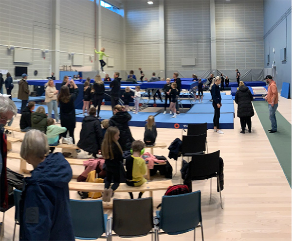

SACRO är en sektion i Sjövalla Frisksportklubb och står för Sjövallas acrobater. Vi har träningsgrupper inom gymnastikgrenen trampolin från nybörjare upp till elitnivå. Från hösten 2021 håller vi till i vår nybyggda hall i Mölnlycke fabriker.

Tack så mycket för att du visat intresse av att bli tränare hos SACRO! Det betyder verkligen mycket för oss att ha personer som du som är villiga att dela med sig av sin kunskap och erfarenhet.
Vi ser fram emot att få jobba tillsammans och skapa något fantastiskt för våra medlemmar. Med din energi och entusiasm kommer vi säkert att göra stor skillnad tillsammans!
Ser fram emot att höra från dig snart.Anmäl dig här